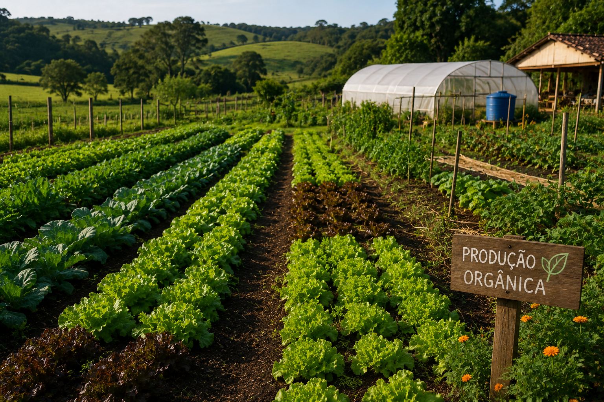

O que é a produção orgânica?
A produção orgânica é um modelo agrícola que respeita os ciclos naturais da terra, priorizando o equilíbrio entre o solo, a água, os seres vivos e o ser humano. Nesse sistema, não são utilizados agrotóxicos, fertilizantes químicos ou organismos geneticamente modificados.
Em vez disso, são adotadas práticas sustentáveis como a rotação de culturas, adubação natural, compostagem e controle biológico de pragas. Essas técnicas fortalecem o solo e promovem a biodiversidade, criando um ambiente mais saudável e resiliente.
Além dos benefícios ambientais, a produção orgânica também contribui para a saúde humana, oferecendo alimentos mais naturais e livres de resíduos químicos. Esse modelo valoriza o pequeno produtor, o consumo consciente e a conexão entre o campo e a cidade.
Escolher a produção orgânica é investir em um futuro sustentável, onde produzir alimentos não significa esgotar recursos, mas sim cuidar da terra que nos sustenta.
💡 Você sabia? Um solo saudável pode armazenar mais carbono e ajudar no combate às mudanças climáticas.